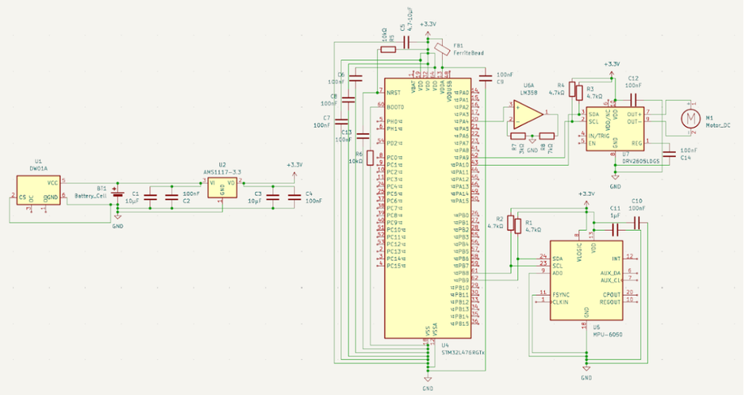

Thu thập dữ liệu
Cụm cảm biến chuyển động đa trục ghi nhận liên tục chuyển động cổ tay theo nhiều phương khác nhau.
Wearable Tremor Stabilization
Thiết bị đeo ổn định chuyển động tay cho người mắc Parkinson, giúp giảm run không chủ ý nhưng vẫn giữ nguyên chuyển động chủ động.
Người bệnh Parkinson và người gặp rối loạn run có thể mất tự tin trong những thao tác tưởng như rất nhỏ: viết một dòng chữ, cầm ly nước, dùng muỗng, hoặc thao tác trên điện thoại.
Các giải pháp hiện có thường chỉ theo dõi dữ liệu, hỗ trợ một tác vụ riêng lẻ, hoặc can thiệp sâu. Stabily chọn hướng khác: một hệ ổn định vật lý chủ động, nhỏ gọn và có thể đeo mỗi ngày.
Stabily đo chuyển động cổ tay, phân tích tín hiệu run theo thời gian thực và kích hoạt một dao động cơ học ngược pha để làm suy giảm biên độ rung tổng thể.
Thiết bị không can thiệp vào hệ thần kinh hay cơ bắp. Nó hoạt động như một hệ ổn định vật lý đeo trên cổ tay, hỗ trợ người dùng kiểm soát tay tốt hơn trong những thời điểm cần độ chính xác.
Khi phát hiện run bệnh lý, bộ xử lý ước lượng tần số, biên độ, pha và hướng chuyển động. Từ đó motor tạo ra tín hiệu phản hồi lệch pha 180 độ so với dao động ban đầu.
Cụm cảm biến chuyển động đa trục ghi nhận liên tục chuyển động cổ tay theo nhiều phương khác nhau.
Dữ liệu được lọc nhiễu và phân tích phổ tần để phân biệt chuyển động chủ ý với rung bệnh lý có tính lặp lại.
Hệ thống xác định biên độ, tần số, pha và hướng dao động để tính mức can thiệp phù hợp.
Cơ cấu truyền động tạo phản hồi cơ học đối nghịch với rung ban đầu, giảm biên độ rung tổng thể.
Prototype kết hợp vi điều khiển, cảm biến IMU, mạch điều khiển motor, nguồn pin lithium và kết nối không dây để tạo thành một vòng phản hồi liên tục.

Độ tuổi 50-75, cần duy trì khả năng sinh hoạt độc lập và tự tin hơn.
Sẵn sàng chi trả cho sức khỏe người thân nhưng cần thấy hiệu quả rõ ràng.
Stabily được phát triển bởi một nhóm đa lĩnh vực, kết hợp chiến lược sản phẩm, marketing, tài chính và kỹ thuật để biến ý tưởng ổn định chuyển động tay thành prototype có khả năng thử nghiệm thực tế.
Định hướng chiến lược, phát triển sản phẩm và định vị Stabily từ ý tưởng đến prototype.
Phụ trách chiến lược marketing, storytelling, branding và user acquisition.
Quản lý tài chính, mô hình doanh thu, cấu trúc chi phí và chiến lược gọi vốn.
Phát triển công nghệ, phần cứng, xử lý tín hiệu và cơ chế phản hồi thời gian thực.